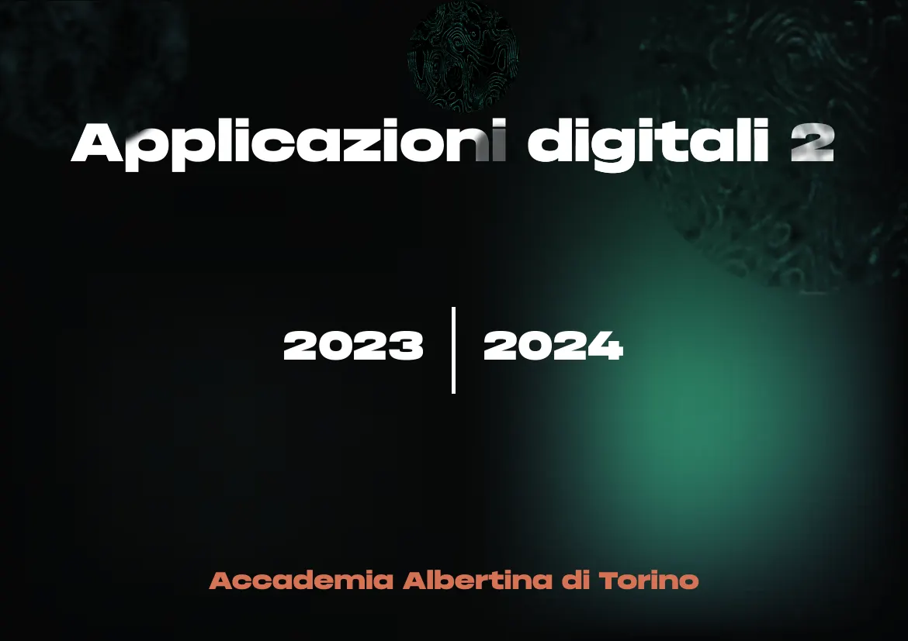
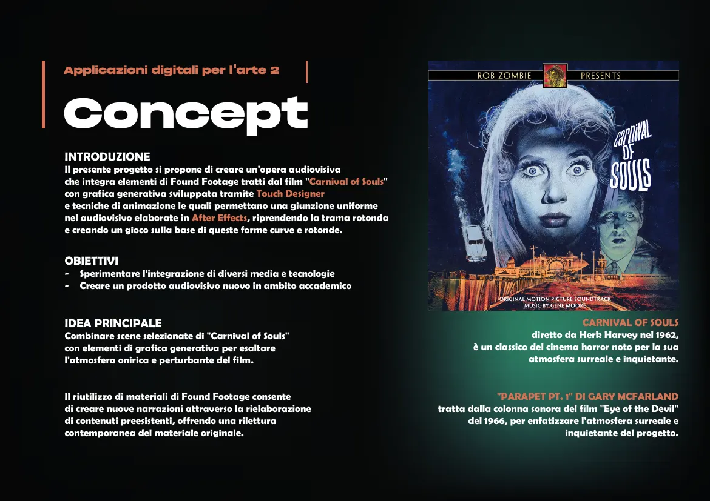
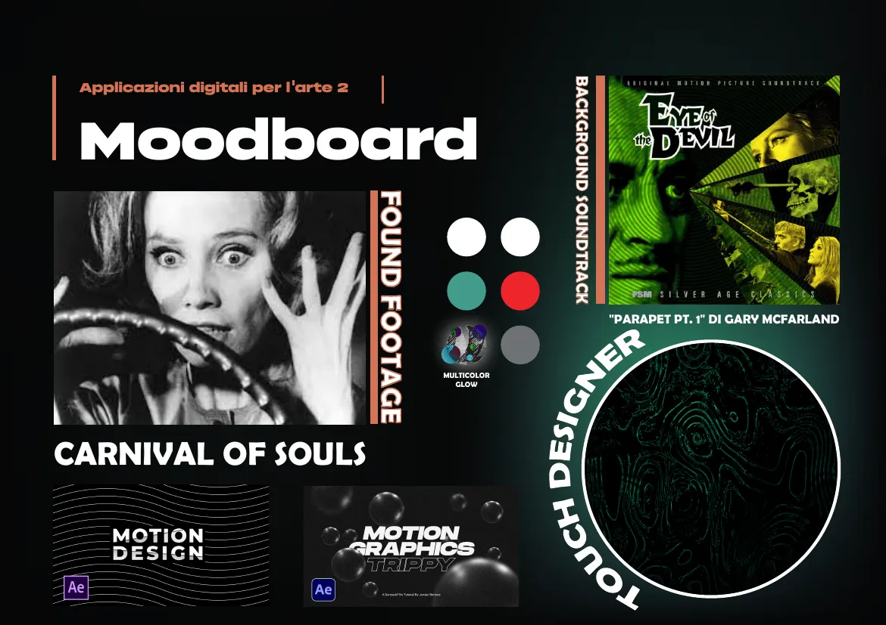
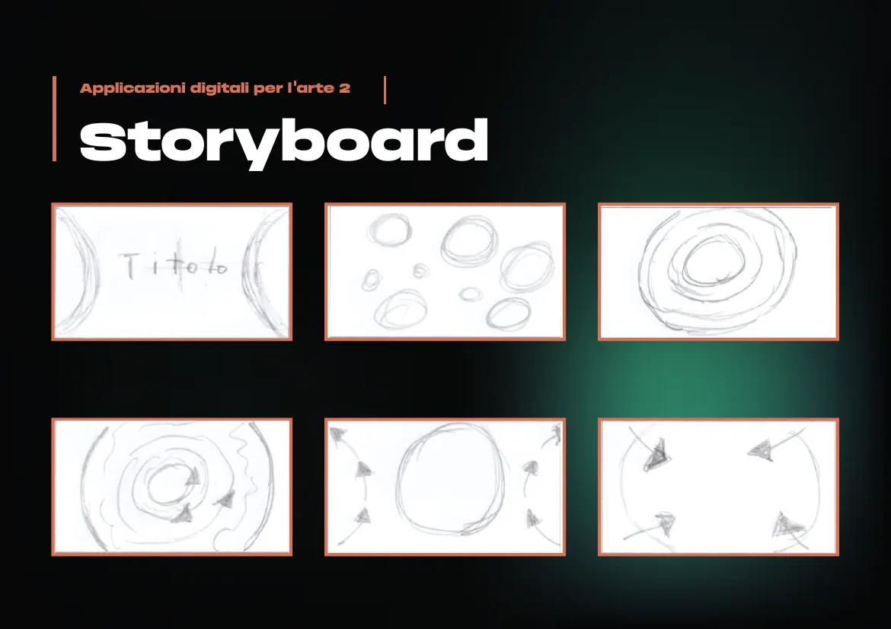
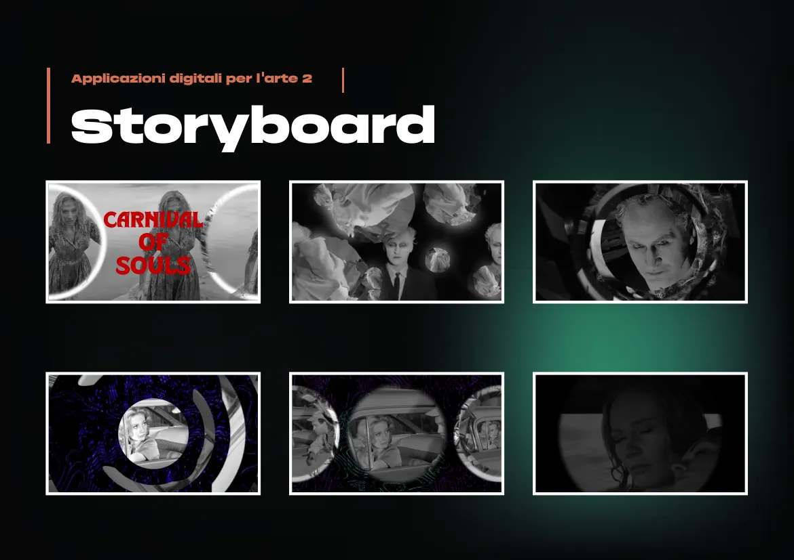

Audiovisivo · corso di montaggio, Accademia Albertina · 2023–24
Carnival of Souls
Un'opera audiovisiva che unisce found footage dal film horror del 1962 e grafica generativa fatta con TouchDesigner e After Effects.
Realizzato da solo, soprattutto in After Effects, con TouchDesigner per la grafica generativa.

Il video
L'idea
Scene scelte da Carnival of Souls di Herk Harvey (1962) si uniscono a grafica generativa, per esaltare l'atmosfera onirica e perturbante del film. Le forme tonde e curve delle immagini diventano la base di un gioco visivo, collegato in modo uniforme dall'animazione. Il riuso del found footage crea nuove narrazioni da materiale esistente. La colonna sonora è Parapet Pt. 1 di Gary McFarland.


Storyboard
Dagli schizzi a matita di cerchi e spirali ai fotogrammi del film fusi con le forme.


Facciamo qualcosa insieme.